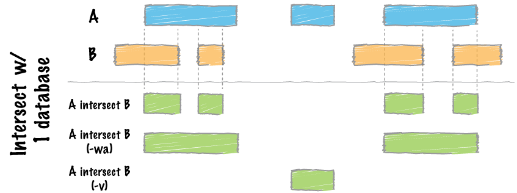

Visualization and exploration of ChIP-seq data
Approximate time: 80 minutes
Learning Objectives
- Generate bigWig files
- Visualizing enrichment patterns at particular locations in the genome
- Evaluating regions of differential enrichment using
bedtools
Visualization of ChIP-seq data
The first part of ChIP-sequencing analysis uses common processing pipelines, which involves the alignment of raw reads to the genome, data filtering, and identification of enriched signal regions (peak calling). In the second stage, individual programs allow detailed analysis of those peaks, biological interpretation, and visualization of ChIP-seq results.
There are various strategies for visualizing enrichment patterns and we will explore a few of them. To start, we will create bigWig files for our samples, a standard file format commonly used for ChIP-seq data visualization.
Creating bigWig files
The first thing we want to do is take our alignment files (BAM) and convert them into bigWig files. The bigWig format is an indexed binary format useful for dense, continuous data that will be displayed in a genome browser as a graph/track, but also is used as input for some of the visualization commands we will be running in deepTools.
deepTools, is a suite of Python tools developed for the efficient analysis of high-throughput sequencing data, such as ChIP-seq, RNA-seq or MNase-seq. deepTools has a wide variety of commands that go beyond those that are covered in this lesson. We encourage you to look through the docuementation and explore on your own time.

Image acquired from deepTools documentation pages
Start an interactive session with 6 cores. If you are already logged on to a compute node you will want to exit and start a new session.
$ srun --pty -p short -t 0-12:00 --mem 8G -n 6 --reservation=HBC bash
We will begin by creating a directory for the visualization output and loading the required modules to run deepTools.
$ cd ~/chipseq/results/
$ mkdir -p visualization/bigWig visualization/figures
$ module load gcc/6.2.0 python/2.7.12
$ module load deeptools/2.5.3
One last thing we need to do is create an index file for each one of our BAM files. To perform some functions on the BAM file, many tools require an index. Think of an index located at the back of a textbook. When you are interested in a particular subject area you look for the keyword in the index and identify the pages that contain the relevant information. Similarily, indexing the BAM file aims to achieve fast retrieval of alignments overlapping a specified region without going through the whole alignment file.
In order to index a BAM file, we will use SAMtools, a tool suite that provides alot of functionality in dealing with alignment files. There is a command called samtools index, which is what we will use. Since we need an index for each of our BAM files, we will put this in a for loop to avoid having to run the same command multiple times.
First, let's load the module:
$ module load samtools/1.3.1
Now, at the command prompt start the for loop:
for file in ~/chipseq/results/bowtie2/*aln.bam
do
samtools index $file
done
NOTE: The above is assuming that you are pressing return after each line of code. If you wanted you could also run this command as a single line:
$ for file in ~/chipseq/results/bowtie2/*aln.bam; do samtools index $file; done
Now, to create our bigWig files there are two tools that can be useful: bamCoverage and bamCompare. The former will take in a single BAM file and return to you a bigWig file. The latter allows you to normalize two files to each other (i.e. ChIP sample relative to input) and will return a single bigWig file.
Let's create a bigWig file for Nanog replicate 2 using the bamCoverage command. In addition to the input and output files, there are a few additional parameters we have added.
normalizeTo1x: Report read coverage normalized to 1x sequencing depth (also known as Reads Per Genomic Content (RPGC)). Sequencing depth is defined as: (total number of mapped reads * fragment length) / effective genome size). So the number provided here represents the effective genome size. Some examples of values for commonly used organisms can be found here.binSize: size of bins in basessmoothLength: defines a window, larger than thebinSize, to average the number of reads over. This helps produce a more continuous plot.centerReads: reads are centered with respect to the fragment length as specified byextendReads. This option is useful to get a sharper signal around enriched regions.
$ bamCoverage -b bowtie2/H1hesc_Nanog_Rep2_aln.bam \
-o visualization/bigWig/H1hesc_Nanog_Rep2.bw \
--binSize 20 \
--normalizeTo1x 130000000 \
--smoothLength 60 \
--extendReads 150 \
--centerReads \
-p 6 2> ../logs/Nanog_rep2_bamCoverage.log
We can do the same for the Pou5f1 replicate 1:
$ bamCoverage -b bowtie2/H1hesc_Pou5f1_Rep1_aln.bam \
-o visualization/bigWig/H1hesc_Pou5f1_Rep1.bw \
--binSize 20 \
--normalizeTo1x 130000000 \
--smoothLength 60 \
--extendReads 150 \
--centerReads \
-p 6 2> ../logs/Pou5f1_rep1_bamCoverage.log
NOTE: There is a reason we chose the specific replicates for the above commands, and it will become more obvious as we get to the end of this lesson!
Now, if we wanted to create a bigWig file in which we normalize the ChIP against the input we would use bamCompare. The command is quite similar to bamCoverage, the only difference being you require two files as input (b1 and b2).
## DO NOT RUN THIS
$ bamCompare -b1 bowtie2/H1hesc_Pou5f1_Rep1_aln.bam \
-b2 bowtie2/H1hesc_Input_Rep1_chr12_aln.bam \
-o visualization/bigWig/H1hesc_Pou5f1_Rep1_bgNorm.bw \
--binSize 20 \
--normalizeTo1x 130000000 \
--smoothLength 60 \
--extendReads 150 \
--centerReads \
-p 6 2> ../logs/Pou5f1_rep1_bamCompare.log
NOTE: When you are creating bigWig files for your full dataset, this will take considerably longer and you will not want to run this interactively (except for testing purposes). Instead, you might want to consider writing a job submission script with a loop that runs this command over all of your BAM files.
Since we are using a toy dataset which contains only a subset of the data, using these bigWigs for visualization would not give us meaningful results. As such, we have created bigWig files from the full dataset that you can use for the rest of this lesson.
Profile plots and heatmaps
Once you have bigWig files you can use them to get a global look at enrichment patterns in your data at specified regions. In our example, we will assess enrichment around the TSS and plot this separately for the Nanog and Pou5f1 samples (two replicates in each plot).
Rather than looking at the TSS for all known genes, we will only look be looking at genes on chromosome 12 in the interest of time. Copy over the BED file which contains the coordinates for all genes on chromosome 12 to the visualization folder.
$ cp /n/groups/hbctraining/chip-seq/deepTools/chr12_genes.bed ~/chipseq/results/visualization/
Before we start plotting our data, we first need to prepare an intermediate file that can be used with the plotHeatmap and plotProfile commands.
The computeMatrix command accepts multiple bigWig files and multiple region files (BED format) to create a count matrix which is the intermediate file. It can also be used to filter and sort regions according to their score. Our region file will be the BED file we just copied over and our bigWog files will be those generated from the full dataset that we have provided for you. Additionally, We will specify a window of +/- 1000bp around the TSS of genes (-b and -a). For each window, computeMatrix will calculate scores based on the read density values in the bigWig files.
First, let's create a matrix one for the Nanog replicates:
$ computeMatrix reference-point --referencePoint TSS \
-b 1000 -a 1000 \
-R ~/chipseq/results/visualization/chr12_genes.bed \
-S /n/groups/hbctraining/chip-seq/full-dataset/bigWig/Encode_Nanog*.bw \
--skipZeros \
-o ~/chipseq/results/visualization/matrixNanog_TSS_chr12.gz \
--outFileSortedRegions ~/chipseq/results/visualization/regions_TSS_chr12.bed
NOTE: Typically, the genome regions are genes, and can be obtained from the UCSC table browser. Alternatively, you could look at other regions of interest that are not genomic feature related (i.e. binding regions from another protein of interest).
Now, let's create another matrix for the Pou5f1 replicates:
$ computeMatrix reference-point --referencePoint TSS \
-b 1000 -a 1000 \
-R ~/chipseq/results/visualization/chr12_genes.bed \
-S /n/groups/hbctraining/chip-seq/full-dataset/bigWig/Encode_Pou5f1*.bw \
--skipZeros -o ~/chipseq/results/visualization/matrixPou5f1_TSS_chr12.gz \
--outFileSortedRegions ~/chipseq/results/visualization/regionsPou5f1_TSS_chr12.bed
Using that matrix we can create a profile plot which is essentially a density plot that evaluates read density across all transcription start sites. For Nanog, we can see that Replicate 2 has a particularly higher amount of signal at the TSS compared to Replicate 1.
$ plotProfile -m visualization/matrixNanog_TSS_chr12.gz \
-out visualization/figures/TSS_Nanog_profile.png \
--perGroup \
--colors green purple \
--plotTitle "" --samplesLabel "Rep1" "Rep2" \
--refPointLabel "TSS" \
-T "Nanog read density" \
-z ""
Alternatively, we could use a heatmap to evaluate the same matrix of information:
$ plotHeatmap -m visualization/matrixNanog_TSS_chr12.gz \
-out visualization/figures/TSS_Nanog_heatmap.png \
--colorMap RdBu \
--whatToShow 'heatmap and colorbar' \
--zMin -4 --zMax 4
Similarly we can do the same for Pou5f1. Here, we find that Replicate 1 exhibits stronger signal.
$ plotProfile -m visualization/matrixPou5f1_TSS_chr12.gz \
-out visualization/figures/TSS_Pou5f1_profile.png \
--perGroup --colors green purple \
--plotTitle "" --samplesLabel "Rep1" "Rep2" \
--refPointLabel "TSS" -T "Pou5f1 read density" -z ""
$ plotHeatmap -m visualization/matrixPou5f1_TSS_chr12.gz \
-out visualization/figures/TSS_Pou5f1_heatmap.png \
--colorMap RdBu \
--whatToShow 'heatmap and colorbar' \
--zMin -2 --zMax 2
If we wanted both images in one single plot, we can do that with plotHeatmap and just removing the --whatToShow parameter.
$ plotHeatmap -m visualization/matrixPou5f1_TSS_chr12.gz \
-out visualization/figures/TSS_Pou5f1_heatmap.png \
--colorMap RdBu \
--zMin -2 --zMax 2

NOTE: Both
plotProfileandplotHeatmaphave many options, including the ability to change the type of lines plotted and to plot by group rather than sample. Explore the documentation to find out more detail.
Differential enrichment
NOTE: Identifying differential binding sites across multiple conditions has become of practical importance in biological and medical research and more tools have become available for this type of analysis. For each group we have two replicates, and it would be best to use tools that make use of these replicates (i.e DiffBind, ChIPComp) to compute statistics reflecting how significant the changes are. If you are interested in learning more, we have a lesson on DiffBind analysis using this same dataset.
To provide a more complex picture of biological processes in a cell, many studies aim to compare different datasets obtained by ChIP-seq. In our dataset, we have peak calls from two different transcription factors: Nanog and Pou5f1. To look at the differences in binding between the two we will use bedtools.
You may already have the module loaded, but in case you don't you will need to load it:
$ module list # check which modules you have listed
$ module load gcc/6.2.0 bedtools/2.26.0
Before using bedtools to obtain the overlap, we need to combine the information from both replicates. We will do this by concatenating (cat) the peak calls into a single file.
Combining the replicates
$ cat macs2/Nanog-rep1_peaks.narrowPeak macs2/Nanog-rep2_peaks.narrowPeak > macs2/Nanog_combined.narrowPeak
$ cat macs2/Pou5f1-rep1_peaks.narrowPeak macs2/Pou5f1-rep2_peaks.narrowPeak > macs2/Pou5f1_combined.narrowPeak
Merge peaks within a file
Now for each for each of those combined peak files we need to merge regions that are overlapping. However, bedtools merge requires a sorted file as input as specified in the help documentation.
$ bedtools merge -h
Sort peaks based on coordinates
The sort command allows you to sort lines of text in a file. However, when you have multiple columns that you are sorting on (and not on the entire line) you need to specify where sort keys start and where they end. In our case we have two columns of numeric values that we want to sort on, the chromosome and the start coordinates (column 1 and 2). The -k1,1 indicates first sort on the first column, and the -k2,2n is to specify sort next on the second column and that this column is numeric (n).
We will sort the file and pipe (|) the output to less to take a quick peek at the sorted file.
$ sort -k1,1 -k2,2n macs2/Nanog_combined.narrowPeak | less
Sort peaks and then merge
Let's start with the Nanog replicates:
$ sort -k1,1 -k2,2n macs2/Nanog_combined.narrowPeak | bedtools merge -i - > bedtools/Nanog_merged.bed
NOTE: this command modifies your
narrowPeakfile into a simple, 3-columnbedfile.
Now, we'll do the same for Pou5f1:
$ sort -k1,1 -k2,2n macs2/Pou5f1_combined.narrowPeak | bedtools merge -i - > bedtools/Pou5f1_merged.bed
NOTE: You could also use the IDR-optimized set of peaks we generated, instead of combining and merging. In our case, because we are looking at a small subset of the data the number of IDR peaks is very low and so this will give us more peaks as a starting point to evaluate the differences.
Looking for differences in enrichment between Nanog and Pou5f1
The bedtools intersect will report back the peaks that are overlapping in the file defined in b with respect to the file defined as a in the command. However, if we add the modifier -v, this will report only those entries in A that have no overlaps with B. In this first example, we will obtain peaks that are only present in Nanog samples.

$ bedtools intersect -h
$ bedtools intersect -a bedtools/Nanog_merged.bed -b bedtools/Pou5f1_merged.bed -v > bedtools/Nanog_only_peaks.bed
If we reverse the files listed for -a and -b, this will now give us peaks that are only present in Pou5f1:
$ bedtools intersect -a bedtools/Pou5f1_merged.bed -b bedtools/Nanog_merged.bed -v > bedtools/Pou5f1_only_peaks.bed
How many peaks are unique to Nanog?
$ wc -l bedtools/Nanog_only_peaks.bed
How many peaks are unique to Pou5f1?
$ wc -l bedtools/Pou5f1_only_peaks.bed
We could visualize read density at these sites by using some of the deepTools commands we had explored previously.
$ computeMatrix scale-regions \
-R ~/chipseq/results/bedtools/Nanog_only_peaks.bed \
-S /n/groups/hbctraining/chip-seq/full-dataset/bigWig/Encode_Pou5f1*.bw /n/groups/hbctraining/chip-seq/full-dataset/bigWig/Encode_Nanog*.bw \
--skipZeros -p 6 \
-a 500 -b 500 \
-o ~/chipseq/results/visualization/matrixAll_Nanog_binding_sites.gz
$ plotProfile -m visualization/matrixAll_Nanog_binding_sites.gz \
-out visualization/figures/Allsamples_NanogSites_profile.png \
--perGroup --plotTitle "" \
--samplesLabel "Pou5f1-Rep1" "Pou5f1-Rep2" "Nanog-Rep1" "Nanog-Rep2" \
-T "Nanog only binding sites" -z "" \
--startLabel "" --endLabel "" \
--colors red red darkblue darkblue
$ computeMatrix scale-regions \
-R ~/chipseq/results/bedtools/Pou5f1_only_peaks.bed \
-S /n/groups/hbctraining/chip-seq/full-dataset/bigWig/Encode_Pou5f1*.bw /n/groups/hbctraining/chip-seq/full-dataset/bigWig/Encode_Nanog*.bw \
--skipZeros -p 6 \
-a 500 -b 500 \
-o ~/chipseq/results/visualization/matrixAll_Pou5f1_binding_sites.gz
$ plotProfile -m visualization/matrixAll_Pou5f1_binding_sites.gz \
-out visualization/figures/Allsamples_Pou5f1Sites_profile.png \
--perGroup --plotTitle "" \
--samplesLabel "Pou5f1-Rep1" "Pou5f1-Rep2" "Nanog-Rep1" "Nanog-Rep2" \
-T "Pou5f1 only binding sites" -z "" \
--startLabel "" --endLabel "" \
--colors red red darkblue darkblue
This lesson has been developed by members of the teaching team at the Harvard Chan Bioinformatics Core (HBC). These are open access materials distributed under the terms of the Creative Commons Attribution license (CC BY 4.0), which permits unrestricted use, distribution, and reproduction in any medium, provided the original author and source are credited.